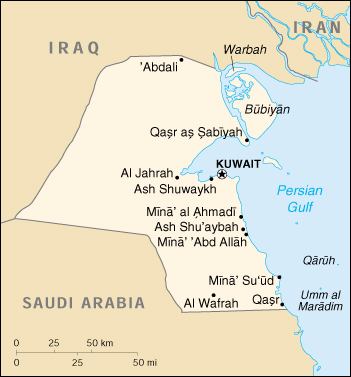

{kind=link}


| Kuwait |
|
|  | |
| Introduction |
Background: Kuwait was attacked and overrun by Iraq on 2 August 1990. Following several weeks of aerial bombardment, a US-led UN coalition began a ground assault on 23 February 1991 that completely liberated Kuwait in four days. Kuwait has spent more than $5 billion dollars to repair oil infrastructure damaged during 1990-91.
| Geography |
Location: Middle East, bordering the Persian Gulf, between Iraq and Saudi Arabia
Geographic coordinates: 29 30 N, 45 45 E
Map references: Middle East
Area:
total:
17,820 sq km
land:
17,820 sq km
water:
0 sq km
Area - comparative: slightly smaller than New Jersey
Land boundaries:
total:
464 km
border countries:
Iraq 242 km, Saudi Arabia 222 km
Coastline: 499 km
Maritime claims:
territorial sea:
12 nm
Climate: dry desert; intensely hot summers; short, cool winters
Terrain: flat to slightly undulating desert plain
Elevation extremes:
lowest point:
Persian Gulf 0 m
highest point:
unnamed location 306 m
Natural resources: petroleum, fish, shrimp, natural gas
Land use:
arable land:
0%
permanent crops:
0%
permanent pastures:
8%
forests and woodland:
0%
other:
92% (1993 est.)
Irrigated land: 20 sq km (1993 est.)
Natural hazards: sudden cloudbursts are common from October to April; they bring inordinate amounts of rain which can damage roads and houses; sandstorms and dust storms occur throughout the year, but are most common between March and August
Environment - current issues: limited natural fresh water resources; some of world's largest and most sophisticated desalination facilities provide much of the water; air and water pollution; desertification
Environment - international agreements:
party to:
Climate Change, Desertification, Environmental Modification, Hazardous Wastes, Law of the Sea, Marine Dumping, Nuclear Test Ban, Ozone Layer Protection
signed, but not ratified:
Biodiversity, Endangered Species, Marine Dumping
Geography - note: strategic location at head of Persian Gulf
| People |
Population:
1,973,572
note:
includes 1,159,913 non-nationals (July 2000 est.)
Age structure:
0-14 years:
29.36% (male 295,102; female 284,327)
15-64 years:
68.32% (male 860,318; female 488,004)
65 years and over:
2.32% (male 29,544; female 16,277) (2000 est.)
Population growth rate:
3.44% (2000 est.)
note:
this rate reflects a return to pre-Gulf crisis immigration of expatriates
Birth rate: 22.04 births/1,000 population (2000 est.)
Death rate: 2.45 deaths/1,000 population (2000 est.)
Net migration rate: 14.77 migrant(s)/1,000 population (2000 est.)
Sex ratio:
at birth:
1.04 male(s)/female
under 15 years:
1.04 male(s)/female
15-64 years:
1.76 male(s)/female
65 years and over:
1.82 male(s)/female
total population:
1.5 male(s)/female (2000 est.)
Infant mortality rate: 11.55 deaths/1,000 live births (2000 est.)
Life expectancy at birth:
total population:
76.08 years
male:
75.27 years
female:
76.92 years (2000 est.)
Total fertility rate: 3.26 children born/woman (2000 est.)
Nationality:
noun:
Kuwaiti(s)
adjective:
Kuwaiti
Ethnic groups: Kuwaiti 45%, other Arab 35%, South Asian 9%, Iranian 4%, other 7%
Religions: Muslim 85% (Sunni 45%, Shi'a 40%), Christian, Hindu, Parsi, and other 15%
Languages: Arabic (official), English widely spoken
Literacy:
definition:
age 15 and over can read and write
total population:
78.6%
male:
82.2%
female:
74.9% (1995 est.)
| Government |
Country name:
conventional long form:
State of Kuwait
conventional short form:
Kuwait
local long form:
Dawlat al Kuwayt
local short form:
Al Kuwayt
Data code: KU
Government type: nominal constitutional monarchy
Capital: Kuwait
Administrative divisions: 5 governorates (muhafazat, singular - muhafazah); Al Ahmadi, Al Farwaniyah, Al 'Asimah, Al Jahra', Hawalli
Independence: 19 June 1961 (from UK)
National holiday: National Day, 25 February (1950)
Constitution: approved and promulgated 11 November 1962
Legal system: civil law system with Islamic law significant in personal matters; has not accepted compulsory ICJ jurisdiction
Suffrage:
adult males who have been naturalized for 30 years or more or have resided in Kuwait since before 1920 and their male descendants at age 21
note:
only 10% of all citizens are eligible to vote; in 1996, naturalized citizens who do not meet the pre-1920 qualification but have been naturalized for 30 years were eligible to vote for the first time
Executive branch:
chief of state:
Amir JABIR al-Ahmad al-Jabir Al Sabah (since 31 December 1977)
head of government:
Prime Minister and Crown Prince SAAD al-Abdallah al-Salim Al Sabah (since 8 February 1978); First Deputy Prime Minister SABAH al-Ahmad al-Jabir Al Sabah (since 17 October 1992); Second Deputy Prime Minister SALIM al-Sabah al-Salim Al Sabah (since 7 October 1996)
cabinet:
Council of Ministers appointed by the prime minister and approved by the monarch
elections:
none; the monarch is hereditary; prime minister and deputy prime ministers appointed by the monarch
Legislative branch:
unicameral National Assembly or Majlis al-Umma (50 seats; members elected by popular vote to serve four-year terms)
elections:
last held 3 July 1999 (next to be held NA 2003)
election results:
percent of vote - NA; seats - independents 50; note - all cabinet ministers are also ex officio members of the National Assembly
Judicial branch: High Court of Appeal
Political parties and leaders: none
Political pressure groups and leaders: several political groups act as de facto parties: Bedouins, merchants, Sunni and Shi'a activists, and secular leftists and nationalists
International organization participation: ABEDA, AfDB, AFESD, AL, AMF, BDEAC, CAEU, CCC, ESCWA, FAO, G-77, GCC, IAEA, IBRD, ICAO, ICC, ICRM, IDA, IDB, IFAD, IFC, IFRCS, IHO (pending member), ILO, IMF, IMO, Inmarsat, Intelsat, Interpol, IOC, ISO (correspondent), ITU, NAM, OAPEC, OIC, OPCW, OPEC, UN, UNCTAD, UNESCO, UNIDO, UPU, WFTU, WHO, WIPO, WMO, WToO, WTrO
Diplomatic representation in the US:
chief of mission:
Ambassador MUHAMMAD al-Sabah al-Salim Al SABAH
chancery:
2940 Tilden Street NW, Washington, DC 20008
telephone:
[1] (202) 966-0702
FAX:
[1] (202) 966-0517
Diplomatic representation from the US:
chief of mission:
Ambassador James A. LAROCCO
embassy:
Bayan, near the Bayan palace, Kuwait City
mailing address:
P. O. Box 77 Safat, 13001 Safat, Kuwait; Unit 69000, APO AE 09880-9000
telephone:
[965] 539-5307 or 539-5308
FAX:
[965] 538-0282
Flag description: three equal horizontal bands of green (top), white, and red with a black trapezoid based on the hoist side
| Economy |
Economy - overview: Kuwait is a small, relatively open economy with proved crude oil reserves of about 94 billion barrels - 10% of world reserves. Petroleum accounts for nearly half of GDP, 90% of export revenues, and 75% of government income. Kuwait lacks water and has practically no arable land, thus preventing development of agriculture. With the exception of fish, it depends almost wholly on food imports. About 75% of potable water must be distilled or imported. Higher oil prices reduced the budget deficit from $5.5 billion to $3 billion in 1999, and prices are expected to remain relatively strong throughout 2000. The government is proceeding slowly with reforms. It inaugurated Kuwait's first free-trade zone in 1999 and will continue discussions with foreign oil companies to develop fields in the northern part of the country.
GDP: purchasing power parity - $44.8 billion (1999 est.)
GDP - real growth rate: 1.1% (1999 est.)
GDP - per capita: purchasing power parity - $22,500 (1999 est.)
GDP - composition by sector:
agriculture:
0%
industry:
55%
services:
45% (1996)
Population below poverty line: NA%
Household income or consumption by percentage share:
lowest 10%:
NA%
highest 10%:
NA%
Inflation rate (consumer prices): 2% (1999 est.)
Labor force:
1.3 million (1998 est.)
note:
68% of the population in the 15-64 age group is non-national (July 1998 est.)
Labor force - by occupation: government and social services 50%, services 40%, industry and agriculture 10% (1996 est.)
Unemployment rate: 1.8% (official 1996 est.)
Budget:
revenues:
$10 billion
expenditures:
$13 billion, including capital expenditures of $NA (1999 est.)
Industries: petroleum, petrochemicals, desalination, food processing, construction materials, salt, construction
Industrial production growth rate: 1% (1997 est.)
Electricity - production: 26.995 billion kWh (1998)
Electricity - production by source:
fossil fuel:
100%
hydro:
0%
nuclear:
0%
other:
0% (1998)
Electricity - consumption: 25.105 billion kWh (1998)
Electricity - exports: 0 kWh (1998)
Electricity - imports: 0 kWh (1998)
Agriculture - products: practically no crops; fish
Exports: $13.5 billion (f.o.b., 1999 est.)
Exports - commodities: oil and refined products, fertilizers
Exports - partners: Japan 24%, India 16%, US 13%, South Korea 11%, Singapore 8% (1997)
Imports: $8.1 billion (f.o.b., 1999 est.)
Imports - commodities: food, construction materials, vehicles and parts, clothing
Imports - partners: US 22%, Japan 15%, UK 13%, Germany 8%, Italy 6% (1997)
Debt - external: $9.27 billion (1998 est.)
Economic aid - recipient: $27.6 million (1995)
Currency: 1 Kuwaiti dinar (KD) = 1,000 fils
Exchange rates: Kuwaiti dinars (KD) per US$1 - 0.3042 (January 2000), 0.3044 (1999), 0.3047 (1998), 0.3033 (1997), 0.2994 (1996), 0.2984 (1995)
Fiscal year: 1 July - 30 June
| Communications |
Telephones - main lines in use: 411,600 (1997)
Telephones - mobile cellular: 150,000 (1996)
Telephone system:
the civil network suffered some damage as a result of the Gulf war, but most of the telephone exchanges were left intact and, by the end of 1994, domestic and international telecommunications had been restored to normal operation; the quality of service is excellent
domestic:
new telephone exchanges provide a large capacity for new subscribers; trunk traffic is carried by microwave radio relay, coaxial cable, open wire and fiber-optic cable; a cellular telephone system operates throughout Kuwait, and the country is well supplied with pay telephones; approximately 15,000 Internet subscribers in 1996
international:
coaxial cable and microwave radio relay to Saudi Arabia; linked to Bahrain, Qatar, UAE via the Fiber-Optic Gulf (FOG) cable; satellite earth stations - 3 Intelsat (1 Atlantic Ocean, 2 Indian Ocean), 1 Inmarsat (Atlantic Ocean), and 2 Arabsat
Radio broadcast stations: AM 6, FM 11, shortwave 1 (1998)
Radios: 1.175 million (1997)
Television broadcast stations: 13 (plus several satellite channels) (1997)
Televisions: 875,000 (1997)
Internet Service Providers (ISPs): 2 (1999)
| Transportation |
Railways: 0 km
Highways:
total:
4,450 km
paved:
3,590 km
unpaved:
860 km (1999 est.)
Pipelines: crude oil 877 km; petroleum products 40 km; natural gas 165 km
Ports and harbors: Ash Shu'aybah, Ash Shuwaykh, Kuwait, Mina' 'Abd Allah, Mina' al Ahmadi, Mina' Su'ud
Merchant marine:
total:
48 ships (1,000 GRT or over) totaling 2,506,448 GRT/4,040,921 DWT
ships by type:
bulk 1, cargo 9, container 6, liquified gas 7, livestock carrier 4, petroleum tanker 21 (1999 est.)
Airports: 7 (1999 est.)
Airports - with paved runways:
total:
4
over 3,047 m:
2
2,438 to 3,047 m:
2 (1999 est.)
Airports - with unpaved runways:
total:
3
1,524 to 2,437 m:
1
914 to 1,523 m:
1
under 914 m:
1 (1999 est.)
Heliports: 2 (1999 est.)
| Military |
Military branches: Army, Navy, Air Force, National Police Force, National Guard, Coast Guard
Military manpower - military age: 18 years of age
Military manpower - availability:
males age 15-49:
749,252 (2000 est.)
Military manpower - fit for military service:
males age 15-49:
446,518 (2000 est.)
Military manpower - reaching military age annually:
males:
17,919 (2000 est.)
Military expenditures - dollar figure: $2.518 billion (FY99/00)
Military expenditures - percent of GDP: 8% (FY99/00)
| Transnational Issues |
Disputes - international: in November 1994, Iraq formally accepted the UN-demarcated border with Kuwait which had been spelled out in Security Council Resolutions 687 (1991), 773 (1993), and 883 (1993); this formally ends earlier claims to Kuwait and to Bubiyan and Warbah islands; ownership of Qaruh and Umm al Maradim islands disputed by Saudi Arabia